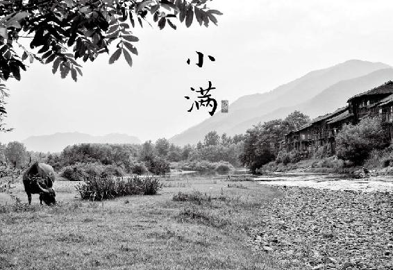

“夏”字在古代有“大”的意思，因为夏季是万物长大的季节，也是人体快速生长的季节，正是《黄帝内经》中所说的养长之时。
古人认为，人是天地的产物，天地之气相感应而生人。春三月，属阳的天气逐渐下降，属阴的地气逐渐上升。到了夏天，天地阴阳之气交汇，人气就开始旺盛地生长了。
做父母的都知道，一到夏天孩子就长得特别快。夏季充足的阳气激发了人体的各种生长机能。举个小例子，夏季每天晒晒太阳，人体所合成的维生素D就足够我们使用到冬天了。而维生素D是人体吸收钙不可或缺的营养素。孩子要长高，就离不开维生素D。对于成年人，它能帮助维持骨骼健康，还能调节人体的免疫力，对于预防糖尿病和老年痴呆症也有帮助。而这仅仅是夏季的阳气带给我们的诸多好处之一。
当人体的生长机能被夏季的阳气激发，在小孩身上，就表现为快速长高。那么大人的生长表现是什么呢？新陈代谢加快，以新生的细胞修复老化的身体和机能。
如果我们能充分地“长”，那么就能有效地延缓身体衰老的速度。所以想要保持青春的话，就一定要在夏天好好地来“长”一“长”。
夏天养生，重点是养两脏：一是心，二是肺。
2.夏季要防心火烧过了头
中医认为，在四季中，夏季属“火”，在五脏六腑中，心和小肠组成“心系”，也属“火”，夏天是心火最旺的季节。
火有什么特性呢？火能带来温暖，还能把食物烧熟。心脏温煦血液，小肠把食物转化成营养精微来吸收，都是体现了“火”的作用。它俩努力工作，就能给人体生长提供动力。夏天需要“长”，所以我们的身体会主动把“心火”烧得旺一点，以便促进新陈代谢，快速生长。
“心火”若是烧过了头，就变成了“上火”，心火上炎，引起舌尖长疮、小便发黄，或是心烦、失眠。
如何预防心火上炎呢？夏天是苦瓜上市的季节，苦瓜就有养心阴清火的作用，可以适当地吃一些。
夏天小孩子特别想喝冰的饮料，也是心火过旺的表现。因为舌为心之苗，心火过旺首先表现在舌尖发红，就想给它凉快一下。这时候应该给孩子喝什么呢？买一个鲜嫩的冬瓜，去皮，切成小块，放榨汁机榨出汁，加一点蜂蜜，拿这个当作饮料让孩子喝，清凉解暑，又能清心火。
夏季心火旺，加上天热出汗多，而汗为心之液，使心脏负担加重，一定要给心脏休息的时间。所以，夏天的午睡很重要。时间不要太长，1小时之内就可以。
每天上午11点到中午1点之间，气血循行心经，这个时候让心脏休息一下是很养心的。如果没有条件午睡，稍微闭目静坐几分钟，也能养心神。哪怕是在办公室，或是机场、车站，只要有一张椅子或凳子可以坐，也要用3分钟时间来静坐养心。
坐在椅子上，后背挺直，双手手掌平放在双腿的膝盖上，闭上眼睛，全身放松，慢慢地深呼吸。周围的环境即便是吵闹的也没有关系，不去管它，只是关注自身的感觉。就这样安静地坐上3分钟或者更长时间。再次睁开眼睛，你会感觉神清气爽。
这个坐姿是中国传统的“正襟危坐”。它的养心奥秘在于手掌放在膝盖上，让手心的劳宫穴与膝盖接触。膝与心是上下关联的，而劳宫穴是保养心脏的穴位，这样就可以达到心肾相交、水火既济的效果，使人心神安定。
3.夏季要多吃辛味，发散体内病气
很多人以为秋天才是养肺的季节。其实，中医把五脏六腑的功能都按阴阳划分。养肺也要分阴阳。秋天肺气旺，我们要养的是肺阴，所以需要润肺。而夏天人体毛孔张开，最容易感受外邪，我们需要宣发肺气，将病气发散出去。
夏天怎样宣发肺气呢？需要吃一些辛味的食物。辛味是发散的，能帮助我们祛除表邪，不让它们停留在体内作怪。辛味有发汗的作用，夏天吃还能帮助人体散热。
辛味是辛香四溢的气味，比如麻、辣、辛香等往外散的气味。哪些东西是辛味的呢？各种调料、香料，还有许多气味独特的中药，都带有辛味。
适合夏天吃的辛味食物有两种：
一种是辛温的，比如葱、姜、蒜、花椒、胡椒、辣椒、大料等。夏季热，人体的阳气都浮在表面，脾胃相对是寒的，这时候吃点辛温的食物，还可以开胃，加强脾胃的功能。
另一种是辛凉的，比如桑叶、薄荷、菊花、金银花等。它们可以帮助我们疏散风热，预防感冒，还能解暑。
立夏，每年的5月5日或6日交立夏节气。为了在夏天更好地“长”，预防盛夏的炎热耗伤人体正气，从立夏开始就要打基础，重点是固摄肾气，要先给它固住。心肾是相通的，保护好肾气，心的阳气就足，就能给夏季养壮（“长”）提供强大的动力。
4.一夜熏风带暑来：立夏时节，固肾开始
夏天是从交立夏节气那一天开始的，也就是每一年的5月5日或6日。一年有“四立”—立春、立夏、立秋、立冬。每一“立”代表着一个季节的开始，是重要的转折点。
每到交“四立”节气的那一天，我们的生活起居一定要顺时而变，特别是要在饮食上有所变化。
为了在夏天更好地“长”，从立夏开始就要打基础，好好地补一下。
立夏节气15天，补养的重点是固摄肾气。为了预防盛夏的炎热耗伤人体正气，要先给它固住。而且心肾是相通的，保护好肾气，心的阳气就足，给夏季养壮（“长”）提供动力来源。
立夏来临，此时可以常吃糯米、豆子和鸡蛋来补气。而我们把鸡蛋用核桃壳来煮，固肾的效果更好。
5.立夏的固肾食方：核桃壳煮鸡蛋
核桃壳煮鸡蛋
原料：核桃壳6个（剥核桃时，中间分隔核桃仁的分心木一定要留下，与核桃壳一起入锅煮）、鸡蛋6个、酱油适量、盐少许。
做法：
① 核桃壳洗净，放锅中，加清水泡30分钟。
② 大火煮开，转小火煮1小时，晾凉（如不晾凉就放鸡蛋则容易煮裂）。
③ 将整只鸡蛋（不用去壳）放入晾凉的核桃水内，按自己的口味加入适量酱油和盐，大火煮开，转小火煮6 ~ 7分钟。
④ 不要关火，用勺子轻轻地敲敲鸡蛋，如果感觉很有弹性，则里面的蛋白已经凝固，此时就可以用勺子将鸡蛋壳敲出均匀的网状裂缝，以便更好地入味。
⑤ 继续煮10分钟，关火起锅。
⑥ 浸泡一晚上，第二天吃，鸡蛋会更入味。
功效：补气，健脾，固肾，预防夏季暑热伤身。
允斌叮嘱
① 酱油和盐根据自己的口味放。如果不想吃咸味的，可以不放酱油，但盐还是要放一点点。盐在这个方子里可以起到药引的作用，引药性入肾经。
② 上面的配方是一家人的参考用量，可以根据人口的多少来加减。每人每天吃1 ~ 3个都可以，根据自己对于鸡蛋的消化能力而定。
③ 可以一次多煮点，放冰箱吃个两三天。
④ 在立夏节气15天中可以每天吃。
⑤ 女性注意避开经期。
这个方子中，核桃壳和分心木是关键。什么是分心木？当我们剥开一个核桃，会看见在两瓣核桃仁之间，有一片小小的薄木片，它将核桃仁分为两瓣，所以叫“分心木”。大多数人吃核桃时，将外壳和这片分心木都丢掉了，实在可惜。
核桃壳和分心木是固摄肾气的宝贝。如果人体的肾气不固，精血就会泄漏，大小便也会固不住，就可能发生长期腹泻、尿多甚至尿血，女性白带过多、崩漏，男性遗精滑泄，老年人夜尿频频，小孩子遗尿等现象。
有上面这些问题的朋友，可以长期坚持用核桃壳（包括分心木）煮鸡蛋吃，并且连汤一起喝掉，效果会相当不错。特别要给家里的老年人吃，有很好的保健作用，能够缓解老年人的腰酸腿软问题，还能预防听力减退和促进睡眠。

上善若水：昨天做的核桃壳煮鸡蛋，浸泡了一夜，早晨儿子吃过了，说可香了，我在月经期没吃。上午喝了两杯姜枣茶，暖暖的，很贴心。
因心：我们是从5月6日开始喝姜枣茶、吃核桃壳煮鸡蛋的，这几天晚上就没起来上厕所了，感恩陈老师！昨天分享给父母，让他们把核桃壳水当茶喝，全家人的身体状况会越来越好！
杨柳回塘： 2017年我生完孩子之后腰疼，到了立夏就按老师的食方吃了核桃壳煮鸡蛋，连续吃了几天之后，忽然发现腰不知什么时候不疼了，赶紧把这个方法推荐给妹妹。
清：孩子之前还会尿床，但是吃了这个之后感觉晚上很少尿床了。
厨娘：书中有很多食方在条件允许的情况下，或者是食材取之方便的情况下，使用了很多。其中我用过最多的是“核桃壳煮鸡蛋”，吃了这个夏天明显好过了，不会感觉烦闷，也没有感冒生病。
文竹：核桃壳煮鸡蛋固肾气真的很好！以前夏天上楼梯总是感觉腿酸软无力，自从吃了核桃壳煮鸡蛋，症状好很多，现在几乎常年坚持吃，除了月经期。
Jingjing：生完孩子后，脚后跟干裂，站久了疼，走路也疼，试了核桃壳煮鸡蛋，现在脚后跟不会干裂，也不疼了。
简单着幸福：核桃壳煮鸡蛋，老人爱起夜，每天吃3个，效果不错！起夜真的少了！

问：早上吃了核桃壳煮鸡蛋，连日来的牙酸和腿沉，竟然好了很多。真的是意外的收获。另外，我喝了煮鸡蛋的汤，可以吗？
允斌答：煮过的核桃壳水是可以喝的，如果想喝，可以少放点酱油和盐。
问：立夏已经过了快10天了，我还可以吃吗？鸡蛋和水也可以食用吗？
允斌答：可以的。喜欢的话，可以经常吃。
问：8岁孩子可以吃吗？
允斌答：大人、小孩都能吃。
问：想问老师怀孕期间按此方法煮蛋吃好吗?
允斌答：怀孕吃米粥煮鸡蛋更好，也不用去壳。
问：核桃壳煮鸡蛋实在太香了,可以经常吃吗?
允斌答：可以的，女性注意避开经期。
问：请问1个人要吃6个这种鸡蛋吗？还是吃1个鸡蛋就可以了？
允斌答：6个是一家人的量，可以放两天。
问：不用整个夏天都吃，是吧？
允斌答：不需要。
问：如果不想入味不敲裂纹缝儿行不行？
允斌答：可以的。煮好后泡一晚上再吃比较好。
问：鸡蛋煮好后一天吃几个？要连续吃几天？
允斌答：立夏之后一周吃这个都很好。至于一天吃几个，您平时吃煮鸡蛋能吃几个就吃几个。我一般每天早上吃2个。
问：老师跪求，煮完鸡蛋的核桃水可以重复用吗？
允斌答：可以的。我家就是如此，每天再加些新的核桃壳。
所见皆风景……问：允斌老师，可以长期给孩子吃核桃壳煮鸡蛋和鹌鹑蛋吗？
允斌答：可以的。
丘峰问：陈老师，我喜欢用核桃分心木泡水喝，一泡就一天，不知道这样有没有问题，或者应该怎么泡。
允斌答：可以的。
大芳问：请问老师，平时可以吃核桃壳煮鸡蛋吗？因为我觉得好吃，我平时都这样吃了 。
允斌答：可以的。
青青^_^悠悠问：陈老师，哺乳期可以吃核桃壳煮鸡蛋不？
允斌答：可以的。
猪肉包问：请问核桃煮鸡蛋里面的鸡蛋可以去壳煮吗？那样比较入味。
允斌答：可以的呢。
6.为什么从立夏到头伏要开始喝“神仙姜枣茶”
看过《回家吃饭的智慧》一书的读者都知道，立夏一过，就是一年一度喝姜枣茶的时间了。许多读者头一年喝了之后感受到了效果，第二年早早就数着日子准备好，还到我微博来留言提醒大家。
说起姜枣茶，仅仅用到生姜、大枣这两样食材，但如果喝对了时间、喝对了方法，效果就很神奇，所谓大道至简就是如此吧。
每年喝姜枣茶的时间，是从立夏开始，一直到三伏的前一天为止，是两个月多一点的时间。这两个月，是夏天的前两个月，气温一天比一天升高。
为什么在天气渐渐热起来的时候反而要喝姜枣茶呢？
夏天其实是吃姜最好的季节。秋天是不适合吃姜的。气温升高时，皮肤表面热，脾胃会比较虚寒。我们提前用姜枣茶补补脾胃，夏天会过得舒服一些。经过一冬一春，人体内容易积聚一些病气。喝姜枣茶可以宣发肺气，帮助我们把病邪驱赶出去。
夏季保健所喝的姜枣茶，方法是很有讲究的，以下是它的做法。
神仙姜枣茶
原料：带皮生姜1块、红枣6个。
原料准备：在洗菜盆中放少许面粉，加入清水搅匀，然后把整块的生姜放进去泡洗10分钟，冲洗干净。不要去皮，连皮一起切下3大片备用。红枣洗干净，掰开。
做法一：煮姜枣茶
红枣和姜片一起加冷水下锅，煮开后转中火再煮10分钟以上。多煮一会儿更好，然后放入保温杯，继续焖泡。可以反复冲泡几次。
做法二：泡姜枣茶
上班的朋友可以用泡茶的方法做姜枣茶：早上把姜切薄片，用保鲜膜包好带到办公室，放保温杯中，加掰开的红枣，用沸水冲泡，盖上盖子多焖一会儿。可以反复冲泡几次。
做法三：煮姜枣粥
允斌叮嘱
煮姜枣粥时，带皮生姜不要切片，而是用菜刀拍扁。大枣掰开。每天早上熬粥的时候，把准备好的带皮生姜和大枣放进去跟着粥一起熬，熬的时间要长一点儿，最好是1小时以上。熬大米粥或是杂粮粥都可以放姜、枣。

玉兔：老师你好！说到姜枣茶，我受益匪浅。以前我到夏天基本不流汗，但是感觉非常热，很难受，有热气散发不出来。自从跟着老师养生喝了姜枣茶，会流汗了，身体会透气了，皮肤会呼吸了，很舒服，就不感觉难受了。去年整个夏天基本不用开空调了，跟着老师养生，真的学到太多太多了，受益也非常多！
wxj：姜枣茶已经喝了两年了，真的很好，喝了后整个人都是很通透的，感恩老师的分享。
蔚蔚蓝天：立夏第二天开始喝的姜枣茶，到现在也没几天，但是神奇的效果我已经感受到了。以前每天早上起床一定会打喷嚏、流鼻涕，一到夏天就犯的鼻炎会让我整天晕乎乎的。喝了几天姜枣茶，我不但早起不打喷嚏了，而且没有头晕的症状了，我会坚持喝下去。万分感谢陈老师。
漫天飞舞：每年的立夏开始喝姜枣茶，体重一直控制得很好，谢谢老师的提醒哦，大爱陈老师。
徐会：我觉得姜枣茶很好，喝一段时间人的气色好，精神也好！
暖：从立夏开始喝姜枣茶，一直坚持到立秋，没想到在此期间有很多变化：一是下巴长痘不明显了，二是偏头疼的问题也解决了，还有每到冬天就得的重感冒竟然再没出现过。身边的同伴不是打针就是吃药，唯独我没病过，心中暗喜，估计都是喝姜枣茶的功效，在此谢谢老师，感恩遇见您！
杨柳回塘：去年我喝了将近一个月的姜枣茶，发现瘦了10斤，10斤哪！立夏将近，早早地备好生姜、红枣，减肥的季节来啦！
袁湘琴呀：我湿气很重，有时候又久坐，所以脸和手指都会肿胀，手指甚至会和萝卜头一样。坚持喝姜枣茶一段时间后，就有很明显的好转。
爱上生活：喝了整整一个夏天，感觉身上特别有精神，即使没有睡好觉也不会觉得累，喝上这个姜枣茶精气神会特别足。
小翠：前年喝了一个星期，有点上火就没有怎么喝。去年喝了差不多一个月，不怎么上火了，也没那么怕冷了。去年以前，晚上睡觉开不了空调，喝了一个月姜枣茶后，晚上睡觉可以开一晚上空调了！黑眼圈也没那么重了，眼袋变浅了，真的很神奇！今年一定会坚持喝。
嘉蜜：每年的立夏到初伏的前一天，我们家都要喝一味在夏天要喝的、非常好的姜枣茶。我记得以前洗头时掉发严重，喝了之后，现在基本就掉几根。我爸喝了之后，在天气非常炎热的时候竟然一点也不感到难受，真好！感谢老师让很多人受益！
上海小虾米奶奶：喝了姜枣茶后，胃痛好了。秋天的过敏性鼻炎困扰我多年，顺时生活，这两年没有发过。
Amy：我们全家都是老师分享的立夏姜枣茶的受益者。自从开始喝姜枣茶，每年夏天我们全家都不太怕空调了，而且喝了姜枣茶，秋天都少了腹泻的现象。
晓玲_深圳：神仙姜枣茶有暖胃、润肠、祛湿的功效。跟着老师顺时生活，记忆力好了很多，脸没那么黄了，没那么怕冷了，皮肤没那么干燥了。多谢老师！
静静：陈老师的神仙姜枣茶让我在过去的这个冬天不再那么怕冷，不用时刻包得密不透风，感觉整个人都轻松好多！真的很棒！
朝花夕拾：跟着陈老师已经喝了两个夏天了，在炎热的天气里感觉身体特别舒服，朋友见到我都问气色为什么这么好。更神奇的是，从前每到夏季脚背或臀部都会起红疹，越挠越痒，会贯穿整个夏天，都不记得受这个罪有多少年了。自从开始喝姜枣茶，这个现象再也没有出现过。
聆听：我是一个会晕车的人，哪怕有些时候不吐，下车以后也不得了，老晕。睡觉过后，还一副很不清醒的样子，吃饭也没胃口，这时候喝姜枣茶就能缓解所有症状，喝两杯下去，特舒服。
法图麦&杨：对于我这个四肢不温、怕冷有湿之人，自接触到姜枣茶后便爱不释手。甜中虽带辛辣，身心却丝毫没有抵触。相反，那滋味感觉非常舒服、受用。整个夏季，每天上午饮用，身体有了明显改变。月事较前大有改善，身体感觉轻巧了，也不像之前畏寒了。今年我还要继续！
拈花一笑：我觉得喝“神仙姜枣茶”效果特别好，变苗条了，最重要的是往年脚丫丫、手丫丫上那痒死人的小水疱消失了。
dhq：姜枣茶大大改善了我手上的汗疱疹，虽然没完全好，但不像以前那样对我的生活造成困扰。相信今年再坚持喝一年，希望能完全治愈。
美丽人生：老师你好，从立夏开喝姜枣茶，已有一周时间了，感觉胸不闷了。以前吃完饭就喘不过气来，这几天舒服多了。谢谢美女老师！
恬淡心缘：喝了姜枣茶，感觉大便好了，不像以前那么黏，看来有祛湿的作用啊。继续喝下去，谢谢有爱的允斌老师。

白flyfly问：陈老师，喝了姜枣茶后身上发了好多红点点，红点慢慢变大，中间开始脱皮，不知道姜枣茶还能继续喝不？红点不痛不痒，有手冷的毛病，喝了姜枣茶后明显改善了好多。
允斌答：这种情况不宜喝姜枣茶，建议现在喝新鲜鱼腥草榨汁。
天使的翅膀问：陈老师，姜枣茶今天没喝完可不可以放到第二天再继续泡着喝？
允斌答：可以的。
李雪问：老师你好，喝姜枣茶后脸上的痘痘就加重，平时痘痘也不见好，反反复复的。
允斌答：面部有痘痘要用鱼腥草和马齿苋。
微信网友问：陈老师，我想问问一岁半的宝宝能喝姜枣茶吗？因为宝宝发烧就抽搐，得去医院住院吊盐水，求老师给点建议，万分感谢老师！
答：是否适合喝姜枣饴糖水与宝宝的年龄无关，而是与其体质有关（对照文章中所说的症状来判断）。发烧时暂不要喝。
Luhui问：感冒可以喝姜枣茶吗？
允斌答：气虚感冒可以喝，风寒感冒去掉枣。
爱医天下问：陈老师，您好！若平常总觉有痰，姜枣茶可放点陈皮煮吗？
允斌答：可以的。
师姐问：陈老师，请问您教的核桃壳煮鸡蛋和姜枣茶孕妇能吃吗？我现在怀孕快7个月了。
允斌答：怀孕7个月喝姜枣茶有些热性了。该吃豆浆煮鸭蛋去胎毒了。
园蜗蜗13414566600问：陈老师您好，我整个春季都在断断续续上火，口腔溃疡好了又来了，到立夏都还没好，还能喝姜枣茶吗？盼回复！
允斌答：先用吴茱萸的方子缓解口腔溃疡。
Lucky问：老师，我以前特别爱喝热水，自从喝了姜枣茶大有好转，真是感恩呀。请问入伏还可以喝吗？期待您的答复！
允斌答：如果不是特别体寒或是长期待在空调房的人就可以不用喝了。入伏后喝黄芪茶，把气血补足，你会更不怕冷的。
莉莉周问：听陈老师的吩咐从立夏开始全家人喝姜枣茶（加枸杞的），今早妈妈说她和爸爸都觉得喝姜枣茶之后，大便比以前吃力了，是因为加了红糖的关系吗？因为妈妈气血不足，所以给她加了红糖。请问是不是需要换成蜂蜜，或是加百合进去？
允斌答：加罗汉果。
淼心问：老师，我可以在神仙姜枣茶里面加枸杞和花椒一起煮茶吗？谢谢老师！
允斌答：如果妇科寒湿很重可以加花椒。
英子问：老师，我去年坚持喝了66天，感觉人气色好，精神好。托老师的福，今年小女也想喝，请问这个量两个人喝行吗？
允斌答：这是一个人的量。两个人加倍。
PENGQIN问：今天早上煮了核桃壳鸡蛋吃，可今天刚好经期，不知道能不能喝姜枣茶。
允斌答：经期可以喝姜枣茶。但经期前两天核桃壳煮鸡蛋少吃。
7.夏季食方“神仙姜枣茶”的功效
总结一下，姜枣茶有如下功效：
（1）帮助身体排毒。
（2）促进水分代谢。
有些朋友常哀叹自己“喝口水都胖”。其实这不是胖而是水潴留。这样的朋友只要喝上一周姜枣茶，多余的水分排出来，人就会变苗条了。
（3）调和消化系统功能。
生姜和大枣在中医开方时常用在一起，用来调和脾胃的功能。特别是在感冒之后，人往往感觉恶心、想呕吐、没胃口，这时候喝点姜枣茶就可以消除这些不适。姜枣茶对于儿童的脾胃保健也很好。
（4）提高免疫系统功能。
初夏喝了姜枣茶，人体对于各种病毒的抵抗力会增强，不容易生病。
（5）预防下巴长痘。
很多人以为长痘痘就是“上火”。其实，痘痘如果只是在下巴长，尤其是中年女性，往往说明人体的下焦有寒气，是气血不足的一个表现，而不是我们通常认为的什么身体火大的缘故。姜枣茶是用姜来把身体下焦的寒气驱赶出去，用枣来补气血。所以常喝这道茶，对于下巴爱长痘的人调理身体的气血是很有帮助的。
姜枣茶特别适合常年在空调环境工作的人群，比如办公室、商场等。空调的冷风将寒湿带入人体内，引发颈椎病、腰痛、咳嗽甚至肥胖等问题。喝些姜枣茶，可以帮助把这些寒湿排出体外，许多小毛病也随之而解了。
一个朋友坚持喝了一个月姜枣茶，意外地发现自己瘦了6斤。其实这就是姜枣茶使身体新陈代谢的功能加快，排出了多余水分和代谢废物的结果。
8.神仙姜枣茶，百搭回春方
我们还可以对姜枣茶进行一些搭配的变化，来适应不同的人群：
气血虚的女性：加红糖。姜枣茶加上红糖，能增强暖血补血的功效，对女性痛经也有帮助。还可以调理女性手脚冰冷、月经推迟等症状。
肠胃不好的小孩：加麦芽糖。孩子如果面黄肌瘦，胃口不佳，有时还肚子痛，喝姜枣茶时加些麦芽糖，改善脾胃功能的效果更好。
腹泻的人：加绿茶。如果吃了生冷瓜果导致水泻，在泡姜枣茶时加些绿茶，就可以止泻了。
旅途中的人：旅途中如果不方便带生姜，可以用姜粉来代替。
饮“神仙姜枣茶”的注意事项
（1）一定要热着喝，不能喝凉的。做好的姜枣茶，可以用保温的茶杯装着。
（2）最好是上午把它喝完，不要超过中午。
（3）初夏、仲夏喝两个月，到入伏前停止。
（4）如果不是血寒的人，不要一年四季天天喝，特别是秋冬季，容易上火。
（5）内热重（比如上火、口舌生疮、咽喉肿痛等）的人不适合喝。
（6）皮肤病发作期（比如湿疹）不适合喝。
（7）女性孕晚期不适合喝。
（8）女性生理期经量超多时不适合喝。
（9）伤口未愈合者不适合喝。
延伸阅读一：大枣枣皮有什么神奇
在这道姜枣茶中，除了姜，所用到的枣也很有讲究。以前我在书里讲过，大枣不宜多吃，吃多了容易生湿热，引起生痰、发胖、口腔溃疡甚至皮肤病。但是，姜枣茶里一次就用6个大枣。为什么敢用这么多呢？因为姜枣茶利用的，主要是大枣枣皮的功效。
很多人都认为大枣是补血的，其实它是气血双补。但要达到补血的效果，就非得要枣皮不可。而且枣皮还有对抗白血病和肿瘤的作用，特别是能降低胃肠道肿瘤的发病风险。
然而我们若是把大枣就这么吃下去，很难完全吸收到枣皮的营养，因为它不好消化，即便在人体消化系统走了一遭还有可能保持着原形。
我们要想利用枣皮的功效，就要给它久煮或者是久泡。现代的提取实验证实，水温高于80℃，泡的时间超过1小时，枣皮的有效成分能够更好地析出。所以我们喝姜枣茶，能够更好地吃到枣皮的营养。泡过的红枣渣，已经没有味道了，可以弃之不食。
延伸阅读二：夏季神仙姜枣茶与感冒姜汤的区别
有些朋友以为喝姜枣茶就等于喝治感冒的姜汤，再吃几个大枣。那可领会不到姜枣茶的妙处，反而可能吃上火。实际上，姜枣茶与感冒姜汤有很大的区别。
（1）带皮和不带皮的区别
姜肉是发汗的，姜皮却是止汗的。感冒喝姜汤，姜要去皮，以便通过发汗来发散风寒。夏季喝姜枣茶，姜皮一定要保留，以免发汗过多，损伤人体的正气。
（2）久煮和快煮的区别
生姜快煮发汗，久煮温中。感冒煮姜汤，时间要短，入锅煮2 ~ 3分钟就好，才能保留生姜发汗的功效。而保健姜茶，最好是久煮或久泡，这样喝下去不太发汗，而是会感觉肚子里暖洋洋的，很舒服。
（3）喝的时间有区别
治病用姜汤，一旦受凉感冒就尽快喝，不拘时辰。而保健的姜枣茶，则最好在每天的中午以前喝完。为什么？在《回家吃饭的智慧》里讲过，过午不食姜，否则伤心肺。
问：又可以喝姜枣茶了。去年听老师的建议立夏开始每天上午一杯姜枣茶，一喝一身汗。真的不错啊。感觉没有以前夏天那么容易疲劳无力！关键是我发现下巴爱长痘的问题好多了，好开心。今年买了一袋姜粉，把它们用茶包装好，方便些，不知道会不会影响效果？
允斌答：用姜粉也可以，会更热性一些，所以量要少。
问：有痰湿体质的人能每天喝姜枣茶吗？我是陈老师的粉丝，超喜欢你的节目。
允斌答：只要不是湿热就可以喝的。大枣只泡水，不要吃。
问：经常听到老人说冬吃萝卜夏吃姜，那为什么夏天要多吃姜？姜吃多了要上火啊！
允斌答：为什么夏天适合多吃姜？因为天气变热后，人的毛孔张开，容易感受外邪，同时食物中的细菌繁殖也快，容易病从口入，而吃姜可以杀菌、抗病毒，增强抵抗力，还是解暑的良药。
同时，夏季用姜可以开胃、促食欲。另外，夏天人们爱开空调，吃生冷，而姜能温补，常吃姜暖暖脏腑很有必要。
9.母亲节：献给母亲的孝心茶— 萱草忘忧茶
墨萱图
元·王冕
灿灿萱草花，罗生北堂下。
南风吹其心，摇摇为谁吐？
慈母倚门情，游子行路苦。
甘旨日以疏，音问日以阻。
举头望云林，愧听慧鸟语。
一个好的节日可以跨越国家界限和种族差异，比如母亲节。我们不必在乎它是从哪里起源的，重要的是我们可以借此机会表达对母亲的爱和敬意。
国际上比较普遍采用的母亲节日期，是在每年5月的第二个周日，也就是5月8日到14日之间的一天。而在中国，也有人倡议设立“中华母亲节”，因孟母为中华母亲的典范，故将日期定在孟子的生日四月初二，推算起来也是在阳历的5月初。
这个时候正值初夏，风和日丽，而中国的母亲花也应景而开了。
美国人送母亲康乃馨，这个习俗仅有百年的历史。作为中国人，我们可以送在中国文化中盛行了几千年的母亲花—萱草。
古人把萱草称为“忘忧花”，因为它有解忧郁的药效。古人远行之前，在母亲所居住的北堂前种下萱草。“萱草生堂阶，游子行天涯”，希望母亲能不为思念所苦。
萱草是在春天生叶，夏天开花。唐代诗人孟郊据此写过一首著名的颂母诗：
游子吟
慈母手中线，游子身上衣。
临行密密缝，意恐迟迟归。
谁言寸草心，报得三春晖。
诗中所说的“寸草”就是萱草。三春即春天的三个月：孟春、仲春、季春。诗人将母亲对孩子的关爱比为春天的暖阳。经过三春的阳光滋养，萱草在初夏开出了灿烂的花朵，替游子为母亲解忧疗愁。
萱草真的是一味解忧药。我们平时吃的黄花菜（金针菜），就是黄花萱草的花。它不仅是煲汤做菜的好食材，也是一味好药：可以解气郁，止疼痛，降血脂，调理更年期症状，令人心气平和，还能预防皮肤松弛，是送妈妈的好礼物。
黄花菜性微凉，肠胃功能不好的人，当菜吃的话不能多吃，可以泡茶来饮用。母亲节到了，我们就给妈妈奉上一杯忘忧茶吧。
萱草忘忧茶
原料：干黄花菜25 克、蜂蜜2 勺。
制作方法：用沸水冲泡，焖制20 分钟后，调入蜂蜜，趁热饮用。
功效：滋阴，理气，解郁，止痛，健脑，安五脏，抗衰老。
黄花菜的营养价值：
① 预防老年智力衰退。
② 降血脂，保健心脏。
③ 增强皮肤的韧性和弹力，预防皮肤衰老。
④ 消炎解毒。
允斌叮嘱
① 哮喘患者忌服。
② 黄花菜只能用晒干的，新鲜的黄花菜不可食用！

小满，每年5月20日到22日之间，当太阳到达黄经60˚那一时刻，交小满节气。 “小满者，物至于此小得盈满。”此时，通过在春天对脾的滋养，立夏对肾气的固护，身体储备了足够的能量，达到了“小得盈满”的状态，可以快速生长了。
为了给身体的生长加把力，我们可以吃梅接命……
10.小满时节，将满未满，一切都是刚刚好
每年5月20日到22日之间，当太阳到达黄经60˚那一时刻，交小满节气。古人解释“小满”的意思是：“小满者，物至于此小得盈满。”对农家来说，这意味着夏熟作物的籽实开始灌浆，但还没完全成熟，尚未大满，故称之为小满。
不仅是谷物，其他春天早发的植物，在此时也都积蓄了丰富的营养。许多以叶、花、籽入药的中草药到了药性最好的时候。上古的时候，就规定药工在这个时候要采收各种草药。从此时起到端午节前后，都是采药的好时机。
比如很多人家里都种的金银花，这段时间就可以采摘了。每天清晨，在露水刚干的时候，选择还没有开放的那种青白色的花蕾，轻轻摘下来，放在阳台通风的地方晾干。注意不要在强烈的阳光下暴晒，否则就会失去香味。初夏采摘的金银花，留着到盛夏时泡水来喝，是清心消暑的佳品。关于金银花的用法，在后面讲盛夏饮食的章节会继续介绍。
有心的朋友会发现，二十四节气之中，只有小满，却没有“大满”。这是为什么呢？在我看来，这恰好体现了中国传统文化的理念。
大满并不是古人所追求的完美境界。月满则亏，水满则溢，一切达到极致后必然走下坡路。而“小得盈满”，是将熟未熟，将满未满，还有向上的空间，还可以“继长增高”，这才符合中国人的理想。
小满节气，天地间充溢着旺盛的阳气，但阳气还没有达到顶点。若是阳气达到顶点，就会由盛而衰，所以此时是刚刚好的。我们通过在春天对脾的滋养，立夏对肾气的固护，身体储备了足够的能量，达到了“小得盈满”的状态，可以快速生长了。
11.小满时节，吃梅接命
夏天的“长”，并不是长赘肉，而是长筋骨、长肌肤、长精力。这种长不仅不会使我们发胖，反而会使身体变得更苗条、更结实、更加有活力。
为了给身体的生长加把力，小满时我们要先给身体减轻负担。减一减体内多余的脂肪，同时排出蓄积的毒素。正好，这个时节，一种特别有中国味道的水果上市了，它能够帮我们完成这个工作。
这个中国味十足的水果叫梅子。它既是食物，也可以制成中药，是小满时医家要采的中草药之一，此时的梅子最为肥美。
梅子有早熟和晚熟品种，早熟的4月就上市了。入药以生长期长的为好，所以在小满前采摘。
7 000多年前，祖先就懂得种植梅树，用梅子来给食物增加酸味。在醋发明以前，梅子是人们每日使用的酸味调味料。现在我们用盐和醋，而先民用的是盐和梅子，所以《尚书》中有“若作和羹，尔惟盐梅”的句子。在先秦时代，梅子和盐是芸芸众生日日烹调不可或缺的主调料。
在出土的青铜器中，曾不止一次地发现有梅核与动物骨头在同一件烹饪器具中的情况。这说明古人把梅子和肉一起来煮，这样可以去腥膻、解油腻。现在广东人吃烧鹅，还是会配上一碟酸甜的梅子酱，以解鹅肉的油腻。
梅子分解油脂的能力的确很强，是天然的降脂药。它含有丰富的果酸，比如柠檬酸、苹果酸等，这些都是分解脂肪的能手。所以，吃梅子既能降低血脂，又能减去皮下脂肪，让人变得苗条。
有一次，我在电视节目中讲梅子，新鲜的梅子刚端上台，主持人拿起一个就咬了一口，酸得他一时说不出话来。他可能不知道，梅子是非常酸的，甚至比山楂更酸。
为什么梅子那么酸？古人认为，一般果树是在春天开花，而梅在冬天开花，到初夏时果实成熟，其结果期经历了一个完整的春天，得到了“春之全气”。春气在五脏中属肝，在五味中属酸，所以梅子的味道特别酸，而且这个酸味专入肝经。
梅子是肝脏的保健水果，它可以增强肝脏的解毒功能，消除疲劳，软化血管。它还能调节肠道的功能。有的人肠胃不太好，吃了不干净的东西后，腹泻几天都好不了，用梅子就可以治疗。
别看梅子这么酸，它却属于健康的碱性食物，可以净化血液、预防癌症。在南方民间流传一句话：吃梅接命。说明古人早就发现吃梅子可以延长寿命。
12.“忆昔好饮酒，素盘进青梅”
梅子怎么吃呢？梅子太酸，直接食用伤牙齿，所以人们发明了梅子的各种制法。梅子的上市时间一般只有两三周，小满前后，新鲜梅子大量上市，我们可以多买一些，做一瓶青梅酒，或熬制一瓶冰梅酱，保存起来，慢慢地吃一年。
梅子的果实一开始是青色的，称为青梅。自从罗贯中在《三国演义》中绘声绘色地写了曹操与刘备“青梅煮酒论英雄”后，很多人都向往喝那一壶酒。其实，曹操请刘备喝的是煮酒，只是酒桌上摆了一盘青梅作为佐酒之物。
青梅是古人常用来醒酒的果品，因为它可以解酒毒。饮酒时品梅是古人喜欢的初夏时令雅事。比如在三国时代后200多年，南朝的鲍照就写过“忆昔好饮酒，素盘进青梅”。后代的诗人对此也多有吟咏。可见古人在生活中处处讲究养生的细节，即使是畅饮美酒的时候，也不会忘记。
青梅酒是有的，但不是话梅煮黄酒那种喝法，而是泡酒。浙江、福建等青梅产地，人们爱泡青梅酒来喝。用青梅泡的酒，酸酸甜甜的，有股梅子的香味，酒精度降低很多，不容易伤肝。这酒喝了以后能使人安睡，对关节炎的患者也有好处。
青梅酒还有一个用处：它可以用来代替料酒做菜，去腥解腻的效果更好。烧鱼或炒肉的时候，到了需要放酒的步骤，开旺火，取1小勺青梅酒往锅里转着圈一淋，酒气立刻升腾，鱼肉的腥膻气味随着酒味蒸发得一干二净，梅酒的酸甜则留了下来，增加了菜的鲜味。
13.接命食方一：青梅酒
做青梅酒的方法很简单，将青梅、白酒与糖或蜂蜜一起放入玻璃瓶里泡制就可以了，比例可以按各人的喜好。下面是其中一种做法：
青梅酒
原料：青梅2斤（1 000克）、白酒3斤（1 500毫升）、红糖（或老冰糖、蜂蜜）半斤到1斤（250~500克）。
做法：
① 青梅用盐水泡一会儿，冲洗干净，沥干水分，放进广口玻璃瓶。
② 在瓶里先放一半的糖，然后倒入白酒，不要太满，到瓶子的五六分满就可以了。
③ 盖好盖子，放在阴凉避光的地方。
④ 等先放的糖完全溶解了，再把剩下的另一半糖放进去。
⑤ 三个月以后就可以喝了，泡一年以上味道更好。
允斌叮嘱
① 关于白酒的度数：本书第一版写的是可以用低度酒。但近几年深入研究发现，现代白酒的生产工艺是用高度数的原酒加水及其他辅料勾兑来降低度数。因此不建议用低度酒了。
② 有一种做法是把青梅用水焯一下再泡。这样泡出来的梅酒不够清澈，需要滤渣。以前的人用井水或者河水，怕水源不够清洁，所以烧开水来焯过更保险。现在我们用自来水，已经没有这个顾虑了，所以可以不用焯水。
③ 青梅很酸，所以需要加糖来调和。量可以根据个人喜好，怕酸就多加一点。关于糖的选择：加红糖、老冰糖或蜂蜜都可以。以前的人做青梅酒，考虑成本问题，就放便宜的老冰糖（黄冰糖）。但现在市面上的冰糖基本为工业生产，已无过去老冰糖的药效（市场上宣称“老冰糖”的大多不真实），因此建议用红糖或蜂蜜为好。
④ 糖的量可以根据个人的喜好，喜欢甜就多加一点。

净心：5月23日按老师的配方做了青梅酒，今天开封，味道美极了。原想过段时间再开，老公等不及了。尝过之后直竖大拇指，并且说一定要带给他的朋友们品尝。这个配方简单、易做，味道可以和日本的梅子酒媲美。
14.接命食方二：酒梅干
其实，一坛青梅酒，最吸引我的不是酒，而是里边的酒梅。泡过酒的青梅一定要留下，它是可以吃的，而且很好吃。
酒里的梅子，捞出来以后就能直接吃。当酒喝完之后，还可以把里面剩下的梅子放阳光下晒几天，晒成酒梅干。日晒以后，酒梅的表皮收缩发黑，变得像话梅似的，可以保存起来当零食吃。
如果你泡酒的时候放的糖比较少，酒里的梅子吃起来酸，还可以把这些梅子单独放在一个玻璃瓶里，放些白糖（一层梅子一层糖）腌制一段时间再吃。
晒干的酒梅，酒味已经挥发了，小孩也可以适当吃些。这种梅干可以消食开胃，还有止咳的作用。小孩喉咙干痒想咳嗽的时候，吃点酒梅就能缓解。
15.接命食方三：冰梅酱
梅子成熟时变为黄色，称为黄梅。江南有梅雨季节，这就是“梅子黄时雨”。黄梅与青梅相比，更有健脾和胃的效果。小满后，梅子开始变黄，还没有完全熟透，这种九成熟的梅子最适合用来做冰梅酱。熬出来的酱酸酸甜甜的，酸而不涩，甜而不腻，颜色也好看。
冰梅酱
原料：新鲜梅子1斤（500克）、老冰糖（或红糖、蜂蜜）半斤（250克）、少许盐。
做法：
① 梅子洗干净后，在凉水里加大约10克盐，把梅子泡在盐水里24小时，去除涩味。
② 锅里加满水，把梅子放进去，用中火煮开，把锅里的水倒掉。
③ 用锅铲把梅子压碎，使果肉和果核分离。然后加少量水，放糖，再放大约1克盐，用小火熬制，一边熬一边用锅铲翻动，注意不要粘锅。一直熬到果肉与糖融合，锅里开始冒大泡泡就关火。
④ 把带梅子核的那部分酱挑出来，单独装在瓶子里备用。把剩余的果酱装在玻璃瓶里，晾凉，放冰箱里保存。
用法：
① 熬好的冰梅酱可以用来当果酱吃，也可以做烧烤的蘸料，配烤肉（鸡、鸭、鹅或猪肉）滋味绝佳。
② 带梅子核的酱吃起来不方便，可以每次取一些，放锅里加点水，再煮一次，当酸梅汤喝。
允斌叮嘱
① 装冰梅酱的玻璃瓶用开水煮一下消毒，每次取的时候用无水无油的勺子，这样冰梅酱才不会变质。
② 用冰糖比较便宜，但由于现在几乎找不到老冰糖，我是用蜂蜜或红糖来熬冰梅酱。蜂蜜熬出来的颜色晶莹，红糖熬出来的颜色深一些，都很好吃。
入夏后，天气越来越热，人容易没有胃口，吃冰梅酱可以开胃，促进消化。它还能促进皮肤的新陈代谢，保持皮肤的健康。有的朋友肝气旺，脾气比较急躁，脸颊两侧靠近耳朵的位置容易长一些细小的类似粉刺的东西，长期不消，这是皮肤角质化的表现，常吃梅子酱会有所改善。
夏季的风热使人口干舌燥，吃梅子酱能生津止渴。
16.梅子是“返老还童激素”
我们都知道“望梅止渴”的故事：三国时，曹操带兵出征，找不到水源，三军皆渴。曹操说：“前有大梅林，饶子，甘酸可以解渴。”士兵们一想到梅子，嘴里不由得流出口水，一鼓作气往前走，终于找到了水源。
如果你吃一口梅子，就会感受到它的那种令人两颊生津的酸，连两个腮帮子都酸得流出了口水。这是因为梅子刺激到了我们的腮腺。
在我们的口腔里，有几个部位的腺体负责唾液的分泌，它们的成分有些区别。在腮腺所分泌的唾液中，含有一种蛋白类激素—腮腺素，它可以使人年轻，所以有人把它美称为“返老还童激素”。腮腺激素能增加人体肌肉、血管、骨骼和牙齿的活力。经常吃梅子，会刺激腮腺分泌腮腺素，让皮肤更有弹性。
宋代梅尧臣在一首《西施》的诗里有两句：“食梅莫厌酸，祸福不我猜。”吃梅子酸得流口水，原来是帮助我们保持青春容颜的好事情呢。